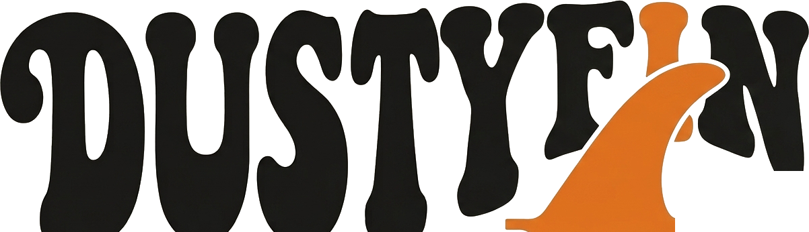
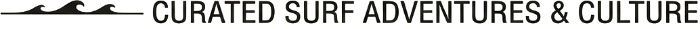
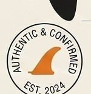
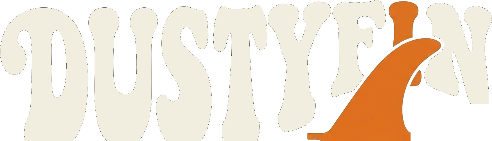
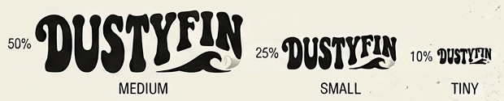
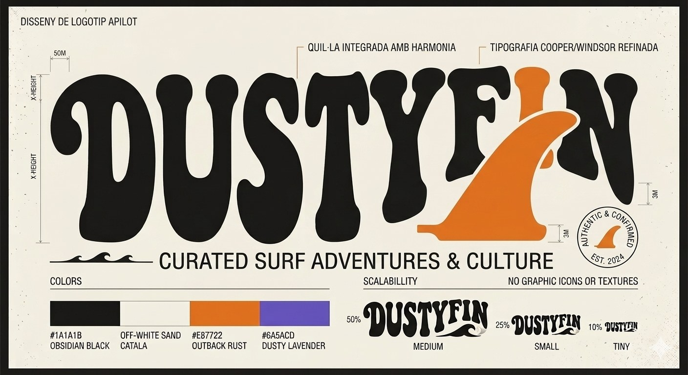

Sheet 01The logo


PrimaryObsidian black + outback rust on sand

the fin replaces the i — the only orange in the logo, so it's the first thing you see
Visual identityCurated surf adventures & cultureEst. 2024


the fin is the i ↗
B. Visual identity — 03 / 03
Dusty Fin curates surf adventures and culture. The identity leans on 70s surf posters: soft, swollen letters in the spirit of Cooper and Windsor, and a single surf fin that takes the place of the i — the whole idea of the brand in one letter.
Sheet 01The logo


PrimaryObsidian black + outback rust on sand

the fin replaces the i — the only orange in the logo, so it's the first thing you see
Sheet 02Colour
{{k.name}}
{{k.code}}
sand & black to read, rust for the fin, lavender for the dusk
Sheet 03Type
WordmarkCooper / Windsor, refined
Soft, heavy, retro serifs — redrawn so the letters lock together and leave room for the fin.
TaglineCondensed sans
Calm and straight, so the wordmark can do the shouting.
Sheet 04Scalability

Sheet 05 — The full logo sheet & in useEst. 2024
